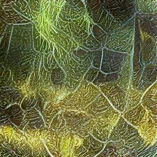

Foundations of Data Science with Python¶

Overview¶
This book is an introduction to the foundations of data science, including data visualization, statistics, probability, and linear algebra. This book is targeted toward engineers, but it should be easily accessible to anyone who knows calculus and knows the basics of computer programming. By leveraging this required background knowledge, this book fits a unique niche in the books on data science and statistics:
This book applies a modern, computational approach to work with data, and in particular, uses simulations (an approach called resampling) to answer statistical questions.
Many books on statistics (especially those for engineers) teach a theoretical approach to answering statistical questions that many learners find difficult to understand. Most learners can easily understand how resampling works in contrast to some arcane formula.
This text provides a basic, but rigorous, introduction to probability and its application to statistics.
Some of the other books that use the resampling approach to statistics omit the mathematical foundations because they are targeted toward a broader audience who may not have the rigorous mathematical background of engineers.
This book provides a solid introduction to linear algebra and its application to data science by leveraging existing computational libraries.
Techniques like data reduction and selection require linear algebra, and many books on statistics omit these topics because of the difficulty of covering linear algebra and statistics.
Real data sets are used wherever practical.
Many statistics books use contrived examples to make examples that are solvable using a calculator, but the majority of the data sets used in this book are analyzed using computer programs.
The data sets and the questions asked are chosen to appeal to a broad audience.
Although the approach taken and the material covered is targeted toward engineers, we try to investigate questions that will appeal to most readers, and especially those that may appeal to college students.
This book provides a unique set of online, interactive tools to help students learn the material, including:
Interactive self-assessment quizzes via JupyterQuiz
Click or tap to select your answer(s)
Interactive flashcards to aid in learning terminology via JupyterCards \(\,\!\)
Click or tap to flip the card. On mobile, you can swipe left to go to the next card. On desktop, use the Next button
I am writing this book online. You can get the original Jupyter notebooks at
https://github.com/jmshea/Foundations-of-Data-Science-with-Python
You get to read the book while it is in progress, but it also means that you will likely find typos and even an occasional error. Please report these to me or send me any feedback that you think would help improve this book. You can:
create a new issue or pull request on Github at https://github.com/jmshea/Foundations-of-Data-Science-with-Python
email me at jshea@ece.ufl.edu
tweet at me: @jmshea.
If you find this useful…